Michael孙兆永
Michael（孙兆永）是北航 Toastmasters 的资深成员与服务团队骨干。最早能在记录里找到他的身影，是 2017 年春天——第 169 次、173 次会议上，他还只是即兴演讲（Table Topic）环节里被点名上台的参与者，和搭档一起认真扮演每一个临场角色，被主持人调侃"较真的男人最帅"。那时的他，正像许多新人一样在台下默默打磨自己。
2018 年春天，他迎来了真正的破冰时刻。在第 194 次会议上，他完成了 Ice Breaker 破稿演讲《On the road from an old boy to a complete man》（从一个老男孩到一个完整的男人），用自己的故事开启了备稿之路；随后又在会议中讲述关于坚持的书、完成了 L1-P3《How can the machine recognize your speech》等多篇备稿演讲，并一度被评为"最佳备稿者"。与此同时，他频繁担任即兴主持（TTM）、综合点评官（GE）、有奖问答主持（Quizmaster）、点评官等多种角色，几乎在每一次会议里都能找到他忙碌的名字。
他不仅会讲，也会服务、会管理。在 Cyril 任主席的服务团队中，他担任秘书长（Secretary），负责俱乐部的会议记录。2018 年底的官员竞选会议上，他在激烈的角逐中胜出，当选为北航头马新一任主席，带领新的服务团队。值得一提的是，在俱乐部第 200 次会议盛典上，他以秘书长身份献上一段优雅的笛声，吹奏《关山月》与《平沙落雁》，把全场带入不一样的意境——这份诗意，正是他作为头马人的独特注脚。
闯关之路 · Competent Communication
做过的演讲 · 3 场
担任过的职责
里程碑
- 2017-04-08 初登台：即兴演讲参与者第169次会议作为Table Topic环节选手上台，是记录里最早的身影。
- 2018-04-26 破冰首秀第194次会议完成Ice Breaker《On the road from an old boy to a complete man》。
- 2018-06-08 第200次会议盛典献笛以秘书长身份吹奏《关山月》《平沙落雁》，惊艳全场。
- 2018-12-22 当选俱乐部主席在官员竞选会议中胜出，成为北航头马新一任主席。
- 2019-03-31 获评最佳备稿者以洗碗主题演讲被评为本次会议Best Prepared Speaker。
为俱乐部做的事
- 担任秘书长，负责俱乐部会议记录与文书工作
- 当选并担任俱乐部主席，统筹重大事项、带领新服务团队
- 多次承担即兴主持(TTM)、综合点评(GE)、有奖问答主持(Quizmaster)等会议核心角色
- 在第200次会议盛典上以竹笛表演为俱乐部庆典增色
- 作为点评官帮助其他演讲者成长
头马里的人
照片墙 · 时间线
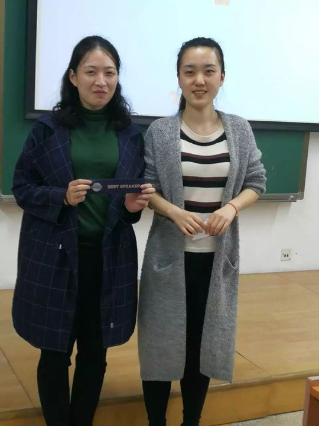
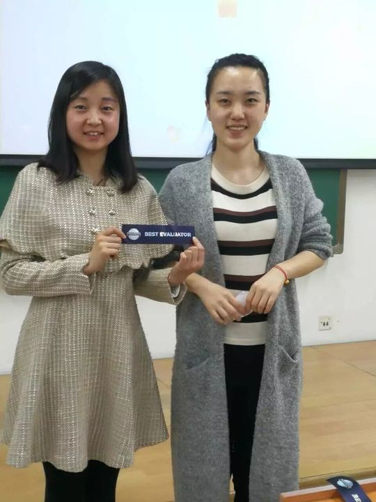
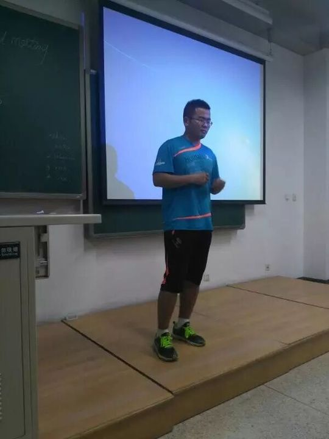
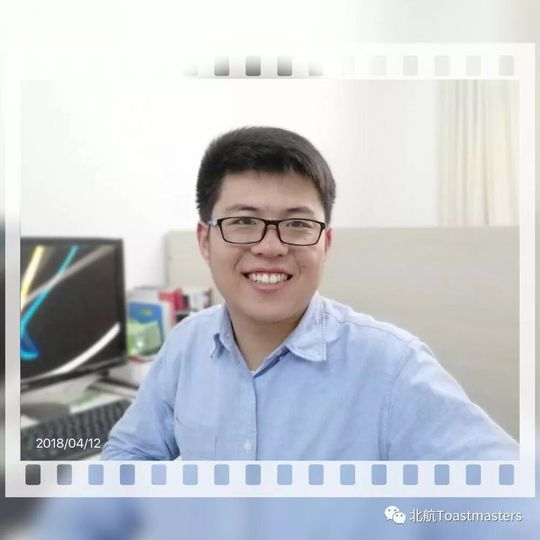
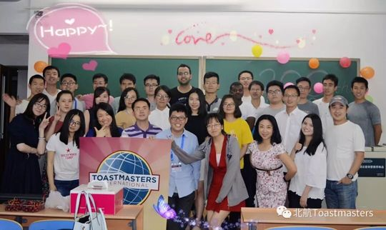
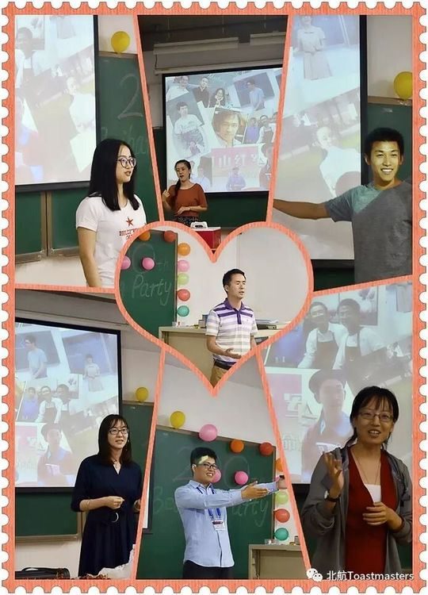
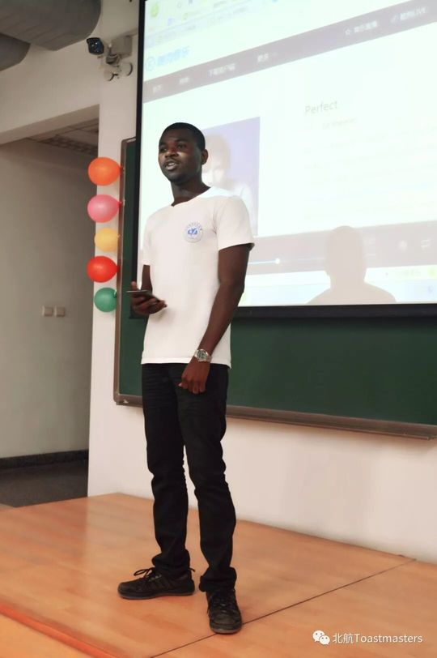
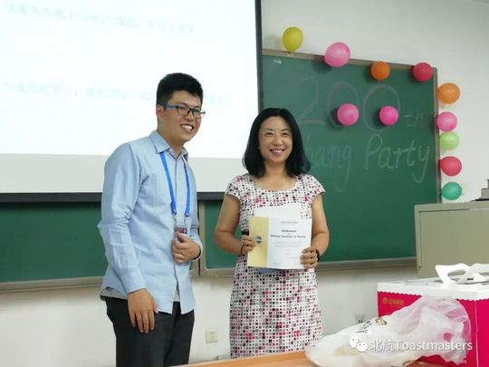
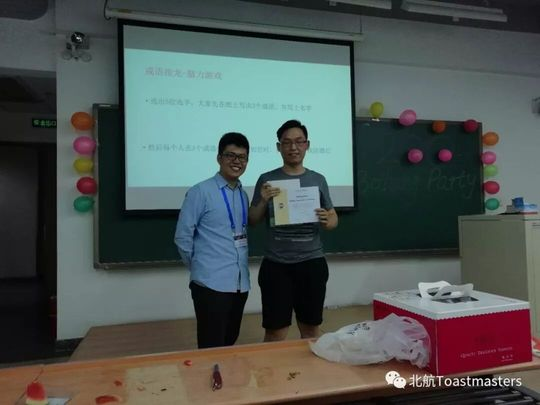

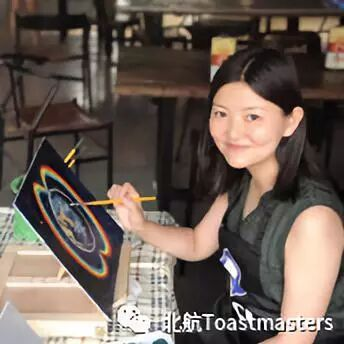
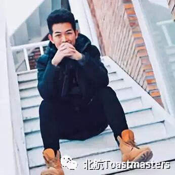
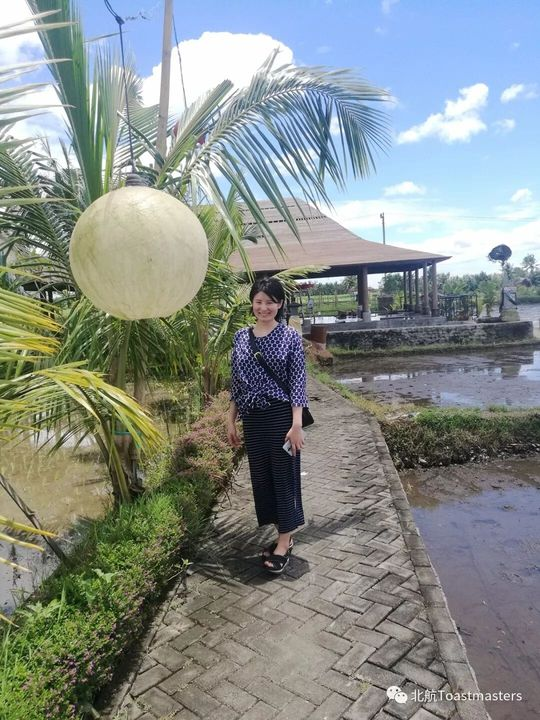
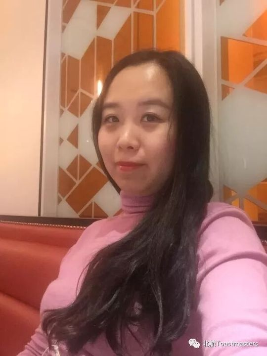

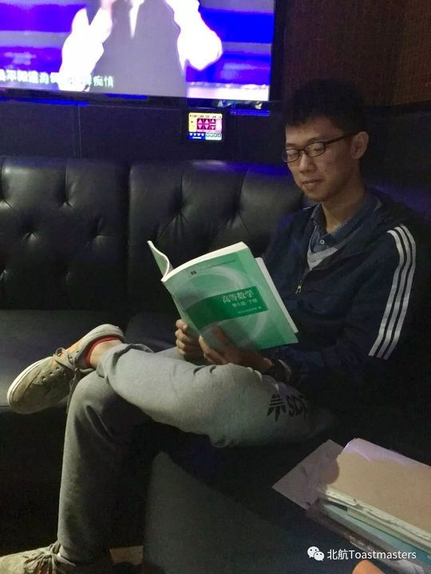
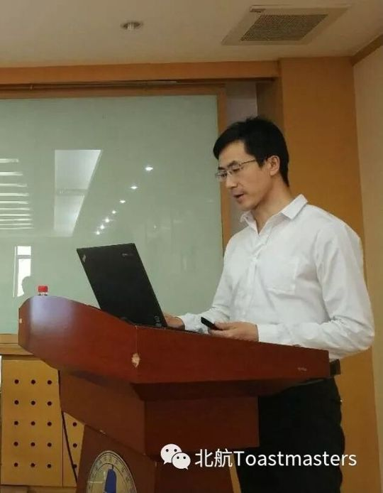
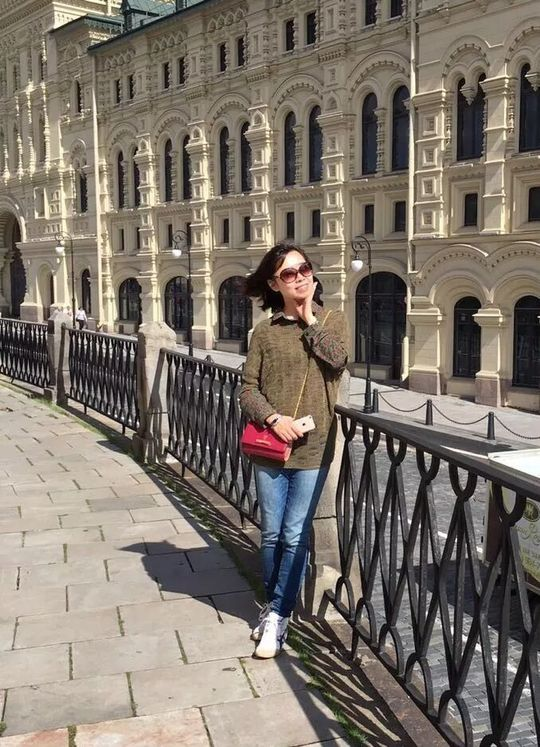
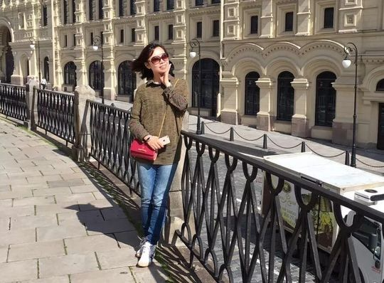
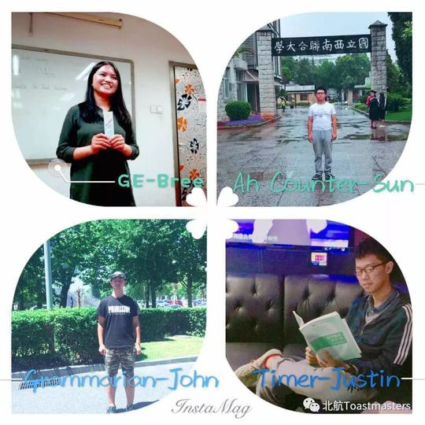
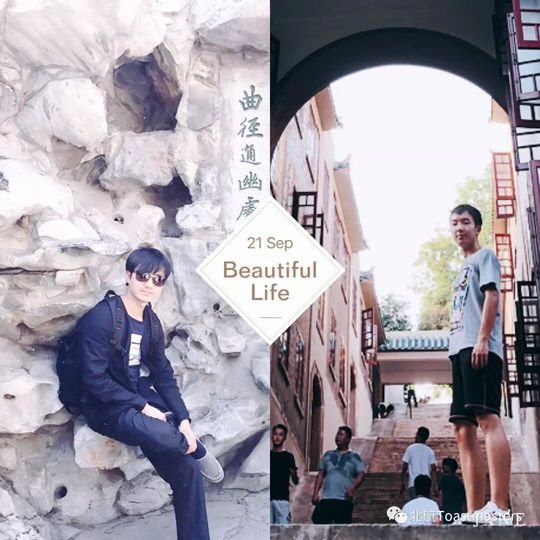
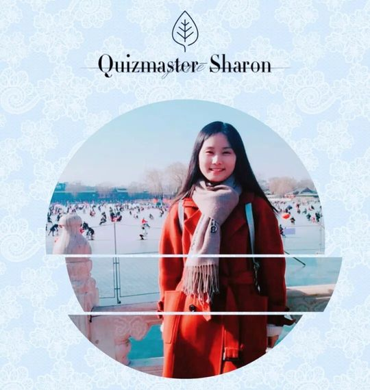
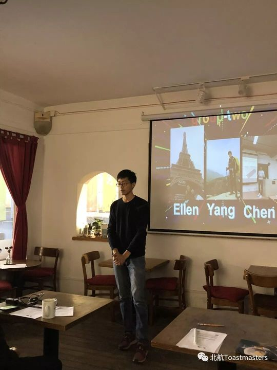
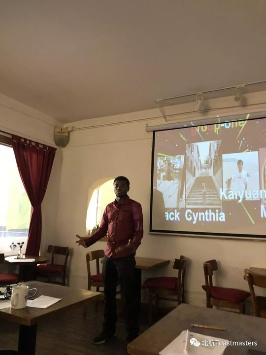
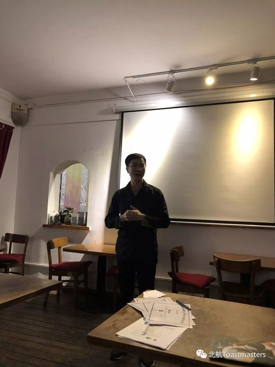

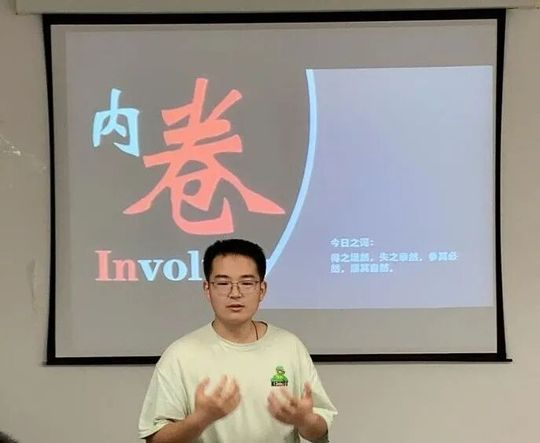
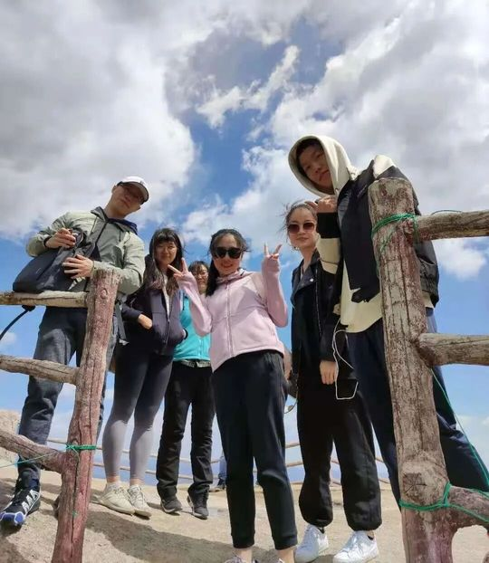
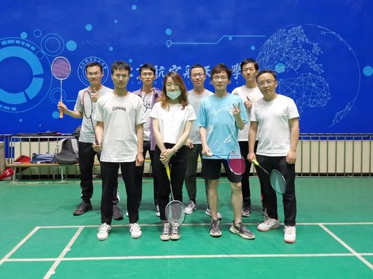